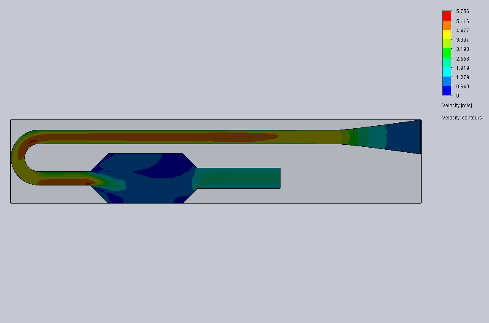
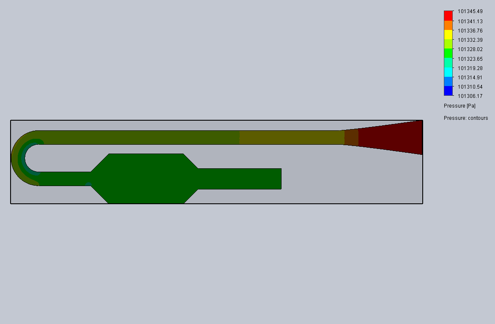

A hands-on propulsion project focused on designing, fabricating, analyzing, and testing
a Lockwood-style valveless pulsejet prototype to study how geometry, airflow, fuel delivery,
ignition, and resonance affect pulsing combustion behavior.
Building a propulsion prototype from analysis to test hardware.
This project began as a design and analysis effort, but quickly became a full
prototype development cycle. I modeled the engine geometry, evaluated airflow
behavior through simulation, fabricated the physical assembly, built and tested
an ignition setup, and performed early firing tests to understand the conditions
needed for stable pulsing behavior.
The goal was not just to make noise or produce flame. The engineering objective
was to understand why the engine behaved the way it did: how geometry affected
resonance, how airflow affected combustion stability, how fuel delivery changed
ignition behavior, and how test conditions influenced whether pulsing could be
sustained.
Fabricated valveless pulsejet prototype during bench setup and system checks.
Designengine geometry and test configuration
Analyzeairflow behavior and geometry effects
Buildprototype hardware and ignition setup
Testignition and assisted-air pulsing behavior
Project Objective
The objective of this project was to design and test a valveless pulsejet concept
while learning how propulsion systems depend on coupled fluid, combustion, and
structural design decisions. The prototype was used as a learning platform for
resonance behavior, flow restriction, chamber and pipe geometry, fuel delivery,
and practical test setup constraints.
Because valveless pulsejets rely on unsteady combustion and pressure-wave behavior,
small geometry and airflow changes can strongly affect performance. That made the
project valuable as an engineering exercise because each test forced a comparison
between expected behavior, physical results, and the next design change.
Engineering Mindset
This project became less about proving a single design worked perfectly and more
about learning how to diagnose a complex system: airflow, fuel, ignition, geometry,
resonance, and test conditions all had to be considered together.
Engineering Workflow
01
Model
Create engine geometry and study how chamber, intake, bend, and tailpipe layout affect flow.
02
Simulate
Use cold-flow CFD to evaluate pressure and velocity behavior through the engine body.
03
Estimate
Use MATLAB to study airflow demand, resonance behavior, and first-order thrust trends.
04
Fabricate
Build physical hardware with welded components, support structure, and test setup hardware.
05
Test & Iterate
Use ignition and assisted-air testing to identify airflow, fuel delivery, and resonance limitations.
Prototype Testing
Test Milestones
Ignition Test
Standalone Igniter Verification
Tested the ignition system independently before full engine operation. This
helped verify that the ignition setup could function on its own before being
used during combustion testing.
Assisted-Air Test
Blower-Assisted Pulsing Behavior
Demonstrated pulsing combustion behavior under assisted-air test conditions.
The blower was used to increase available inlet airflow during stationary
testing, which helped evaluate how airflow availability affected ignition,
resonance behavior, and combustion stability.
Prototype Hardware
Fabrication and Test Setup
Bench setup with the fabricated engine, ignition equipment, and support structure during early test preparation.
Full prototype view showing the chamber, intake path, tailpipe, and support frame before outdoor testing.
Analysis
Cold-Flow CFD and Engineering Estimates
I used cold-flow CFD to evaluate how air moved through the valveless pulsejet geometry
before and alongside physical testing. The simulation helped identify flow behavior through
the intake, chamber, bend, and exit path, while MATLAB estimates were used to connect the
prototype geometry to resonance, airflow requirement, and approximate thrust trends.
421.98 in³Chamber volume
2.375 mEstimated effective path length
61.68 HzEstimated hot resonance frequency
1.95 lbfBaseline estimated hot thrust at 15 psi model input

Velocity contour showing how the intake, bend, chamber, and exit path affected
cold-flow behavior through the prototype geometry.

Pressure contour used to evaluate pressure variation through the engine body and
identify regions affected by flow restrictions and geometry transitions.
Inlet velocity streamlines showing how the incoming flow developed through the
curved intake path and interacted with the chamber region.
Outlet velocity streamlines showing the flow path toward the exit and highlighting
how the geometry influenced flow direction and velocity distribution.
Engineering Estimates
MATLAB-Based Performance and Design Analysis
In addition to physical fabrication and cold-flow CFD, I used MATLAB to study how
geometry, airflow demand, resonance behavior, and estimated thrust changed with
operating assumptions. These plots helped connect the hardware design to expected
engine behavior and provided a structured way to evaluate why the prototype required
external airflow support during sustained operation.
Flow Area Comparison.
This plot compares the inlet opening, intake pipe, and exit pipe flow areas.
It helped highlight a major design constraint: the large inlet opening fed into
a much smaller intake path, which likely limited mass flow and contributed to the
engine’s dependence on additional airflow during testing.
Estimated Air Requirement vs Propane Pressure Input.
This plot shows how required air mass flow increased as propane pressure increased
for several equivalence ratios. It supported the observation that the engine needed
stronger airflow support as fueling increased, helping explain why the blower improved
sustained pulsing behavior.
Estimated Hot Thrust vs Propane Pressure Input.
This estimate was used to study how thrust could scale with fuel pressure under
different assumed performance efficiencies. While simplified, it gave a useful
first-order picture of expected propulsion performance and helped frame the design
as a real engineering propulsion system rather than only a fabrication exercise.
Estimated Resonance Frequency vs Gas Temperature.
This plot shows how resonance frequency was expected to rise with gas temperature.
It was used to connect engine geometry and thermal conditions to operating frequency,
reinforcing the importance of resonance behavior in a valveless pulsejet concept.
Engineering Challenges
What Had to Be Diagnosed
Airflow Availability
Stationary testing showed that available inlet airflow was a major factor in
combustion behavior. Assisted airflow improved the ability to evaluate pulsing
behavior and helped identify airflow as a key design variable.
Resonance and Length Tuning
The engine behavior suggested that pipe length, chamber geometry, and flow path
layout needed to be considered together because the system depends on unsteady
pressure-wave behavior.
Fuel Delivery
Fuel delivery location and direction were important to evaluate because they
affected mixing, ignition behavior, and how consistently the engine produced
pulsing combustion.
Geometry Losses
The intake path, bend, transitions, and tailpipe geometry all influence flow
restriction and pressure recovery, making geometry refinement a major part of
the design process.
Capabilities
Skills Demonstrated
Mechanical Design
System layout, chamber and pipe geometry, support structure, test configuration, and manufacturability.
CFD and Analysis
Cold-flow simulation, flow interpretation, pressure and velocity behavior, and geometry-driven analysis.
Fabrication and Testing
Prototype assembly, welded hardware, ignition setup, physical testing, and troubleshooting.
Engineering Iteration
Using test results to identify airflow, resonance, fuel delivery, and geometry limitations.
Engineer’s Takeaway
Real prototypes expose what simulations and sketches cannot.
This project taught me that propulsion hardware is a system problem. The geometry,
airflow, fuel delivery, ignition, fabrication quality, and test environment all
influence the result. A prototype does not only confirm an idea; it reveals which
assumptions were incomplete.
The biggest value of this project was the full engineering loop: design the concept,
analyze expected behavior, build the hardware, test it, diagnose the limiting factors,
and decide what should change next. That design-build-test iteration is exactly the
kind of engineering work I want to keep developing.